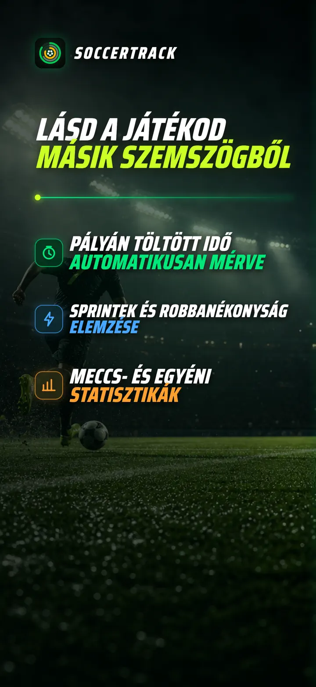
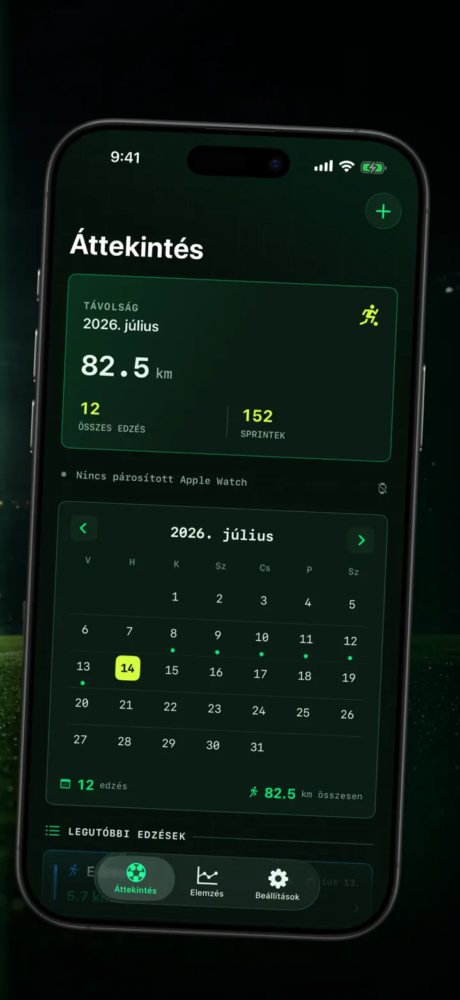
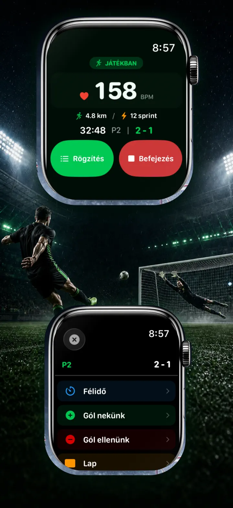
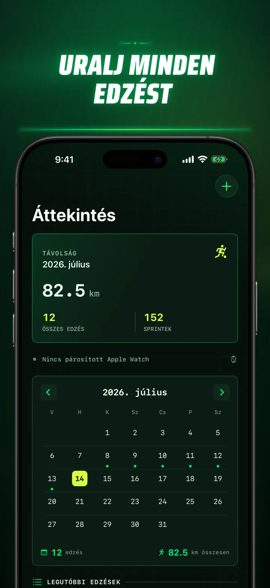
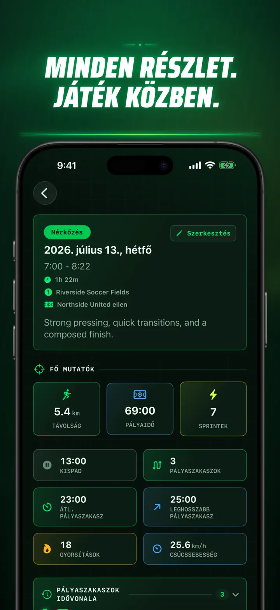
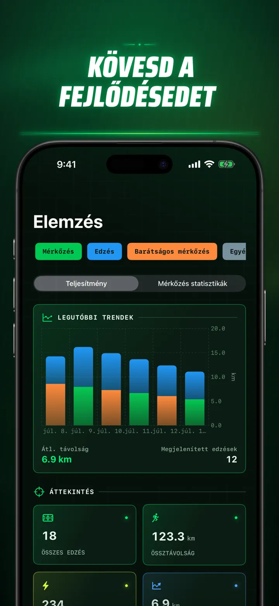
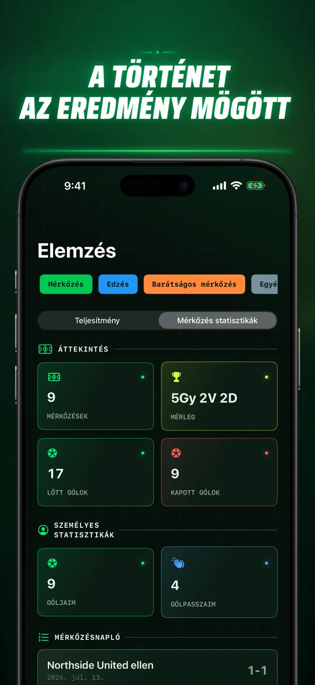
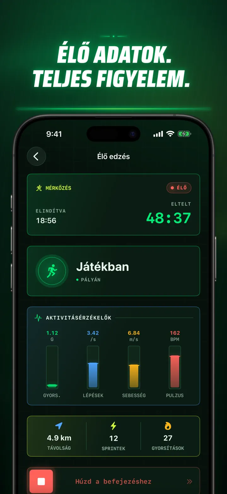
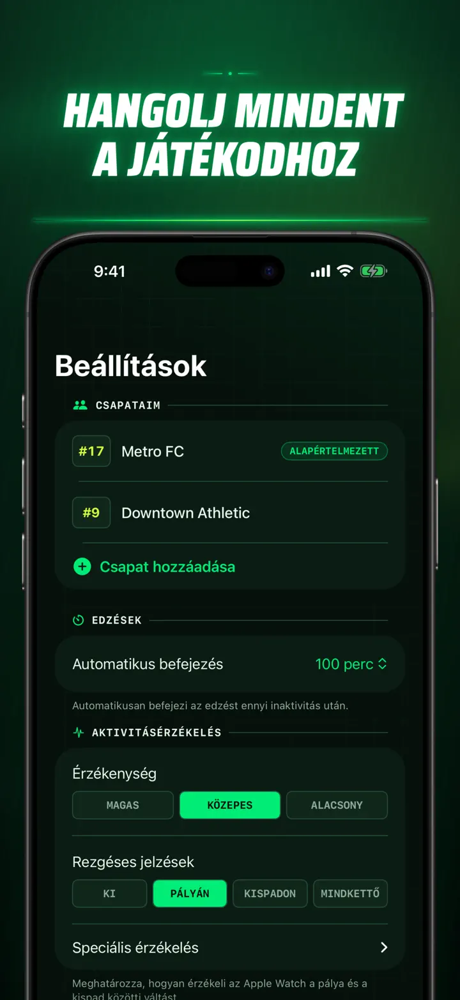
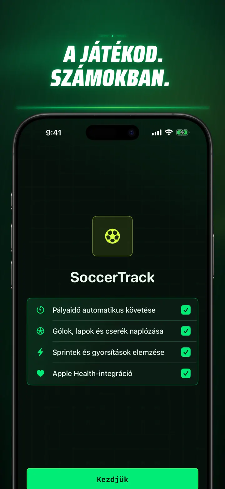

Soccer Time Track
Foci: játékidő és elemzés
Indíts egy edzést, és játssz. Az Apple Watch automatikusan elkülöníti a pályán és a kispadon töltött időt, és rögzíti az élő adatokat, sprinteket, eseményeket.
Letöltés az App Store-ból
Az alkalmazásról
Lásd másképp a meccsedet.
A Soccer Time Track az Apple Watchot meccsnapi segítővé alakítja azoknak a játékosoknak, akik a végeredménynél többet szeretnének tudni. Indítsd el a csuklódról, figyelj a játékra, majd nézd át iPhone-on a teljesítményed részletes képét.
AUTOMATIKUS PÁLYÁN TÖLTÖTT IDŐ
Lásd, mikor voltál valóban játékban. A mozgás-, edzés- és helyadatok segítenek elkülöníteni a játékot, az alacsony aktivitást és a kispadon töltött időt. Ezt kapod:
- Idő a pályán és a kispadon
- Játékszakaszok és áttekinthető idővonal
- A teljes edzés részletes bontása
MECCSNAP A CSUKLÓDRÓL
Válaszd a Meccs, Edzés, Barátságos vagy Egyéb lehetőséget. Játék közben rögzítheted:
- A kapott és szerzett gólokat
- Saját góljaidat és gólpasszaidat
- A sárga és piros lapokat
- A cseréket és játékrészeket
A JÁTÉKOD SZÁMOKBAN
Lépj túl a perceken ezekkel az adatokkal:
- Távolság
- Átlag- és csúcssebesség
- Sprintek és nagy intenzitású megindulások
- Pulzus és aktív kalóriák
- Lépésfrekvencia és gyorsulás
ÉLŐ ADATOK, TELJES FIGYELEM
A párosított iPhone élő adatokat mutathat, miközben az Apple Watch folytatja az edzés rögzítését. Te a meccsre figyelsz, az adatok pedig a háttérben gyűlnek.
KÖVESD A FEJLŐDÉSED
Gyűjtsd egy helyre a meccseket, edzéseket, barátságos mérkőzéseket és más alkalmakat. Nézd meg a trendeket és egyéni rekordokat, hasonlítsd össze a teljesítményeket, és adj hozzá csapatot, mezszámot, ellenfelet, helyszínt és jegyzetet minden eredmény történetéhez.
Máshol is szükséged van az adatokra? Exportáld az edzéseket, játékszakaszokat és eseményeket CSV- vagy JSON-formátumban.
APPLE WATCHHOZ ÉS APPLE HEALTHHEZ
Engedélyeddel a Soccer Time Track edzés-, pulzus-, mozgás- és helyadatokat használ az elemzésekhez, és az elkészült fociedzéseket az Apple Healthbe menti. Az automatikus követéshez Apple Watch szükséges. iPhone-on kézzel is hozzáadhatsz edzést.
A TE ADATAID, A TE MECCSED
Az edzéseid az eszközeiden maradnak, bekapcsolt iCloud-szinkronizálásnál pedig a privát iCloud-adatbázisodban. A Soccer Time Track nem kér fiókot, nem tartalmaz hirdetéseket, és nem használ külső elemzést.
Ne találgasd többé, mennyit játszottál. Lásd, mit hoztál ki az idődből.
Adatvédelmi szabályzat: https://masawata.net/SoccerTimeTrack/privacy-policy.html Szolgáltatási feltételek: https://www.apple.com/legal/internet-services/itunes/dev/stdeula/
Képernyőképek









Soccer Time Track
Indíts egy edzést, és játssz. Az Apple Watch automatikusan elkülöníti a pályán és a kispadon töltött időt, és rögzíti az élő adatokat, sprinteket, eseményeket.
Letöltés az App Store-ból